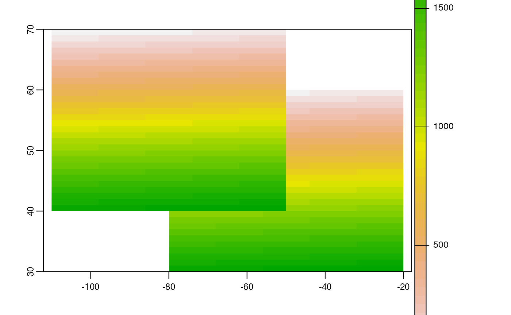

merge.RdMerge SpatRasters to form a new SpatRaster object with a larger spatial extent. If objects overlap, the values get priority in the same order as the arguments. See classify to merge a SpatRaster and a data.frame. You can also merge SpatExtent objects.
There is a also a method for merging SpatVector with a data.frame; that is, to join the data.frame to the attribute table of the SpatVector..
# S4 method for SpatRaster,SpatRaster merge(x, y, ..., filename="", overwrite=FALSE, wopt=list()) # S4 method for SpatExtent,SpatExtent merge(x, y, ...) # S4 method for SpatVector,data.frame merge(x, y, ...)
| x | SpatRaster or SpatExtent |
|---|---|
| y | object of same class as |
| ... | if |
| filename | character. Output filename |
| overwrite | logical. If |
| wopt | list with named options for writing files as in |
The SpatRaster objects must have the same origin and spatial resolution. In areas where the SpatRaster objects overlap, the values of the SpatRaster that is last in the sequence of arguments will be retained.
SpatRaster or SpatExtent
You can use merge with do.call to merge a list of SpatRasters (see example). But note that if the list is named, these names are used by merge. So if all elements are named, there should be one element with a SpatRaster called x and another one called y. For example with names(x)[1:2] <- c("x"m "y"). You can also removed the names of the the first two elements (assuming these are SpatRasters) with names(x)[1:2] <- "".
x <- rast(xmin=-110, xmax=-50, ymin=40, ymax=70, ncols=60, nrows=30) y <- rast(xmin=-80, xmax=-20, ymax=60, ymin=30) res(y) <- res(x) values(x) <- 1:ncell(x) values(y) <- 1:ncell(y) mr <- merge(x, y) plot(mr)mr <- merge(y, x) # if you have many SpatRaster objects in a list # you can use do.call: s <- list(x, y) # add arguments such as filename s$filename <- "" m <- do.call(merge, s) ## # SpatVector with data.frame f <- system.file("ex/lux.shp", package="terra") p <- vect(f) dfr <- data.frame(District=p$NAME_1, Canton=p$NAME_2, Value=round(runif(length(p), 100, 1000))) dfr <- dfr[1:5, ] pm <- merge(p, dfr, all.x=TRUE, by.x=c('NAME_1', 'NAME_2'), by.y=c('District', 'Canton')) pm#> class : SpatVector #> geometry : polygons #> dimensions : 12, 6 (geometries, attributes) #> extent : 5.74414, 6.528252, 49.44781, 50.18162 (xmin, xmax, ymin, ymax) #> coord. ref. : +proj=longlat +datum=WGS84 +no_defs #> names : NAME_1 NAME_2 ID_1 ID_2 AREA Value #> type : <chr> <chr> <num> <num> <num> <num> #> values : Diekirch Clervaux 1 1 312 708 #> Diekirch Diekirch 1 2 218 755 #> Diekirch Redange 1 3 259 568#> NAME_1 NAME_2 ID_1 ID_2 AREA Value #> 1 Diekirch Clervaux 1 1 312 708 #> 2 Diekirch Diekirch 1 2 218 755 #> 3 Diekirch Redange 1 3 259 568 #> 4 Diekirch Vianden 1 4 76 878 #> 5 Diekirch Wiltz 1 5 263 496 #> 6 Grevenmacher Echternach 2 6 188 NA #> 7 Grevenmacher Remich 2 7 129 NA #> 8 Grevenmacher Grevenmacher 2 12 210 NA #> 9 Luxembourg Capellen 3 8 185 NA #> 10 Luxembourg Esch-sur-Alzette 3 9 251 NA #> 11 Luxembourg Luxembourg 3 10 237 NA #> 12 Luxembourg Mersch 3 11 233 NA